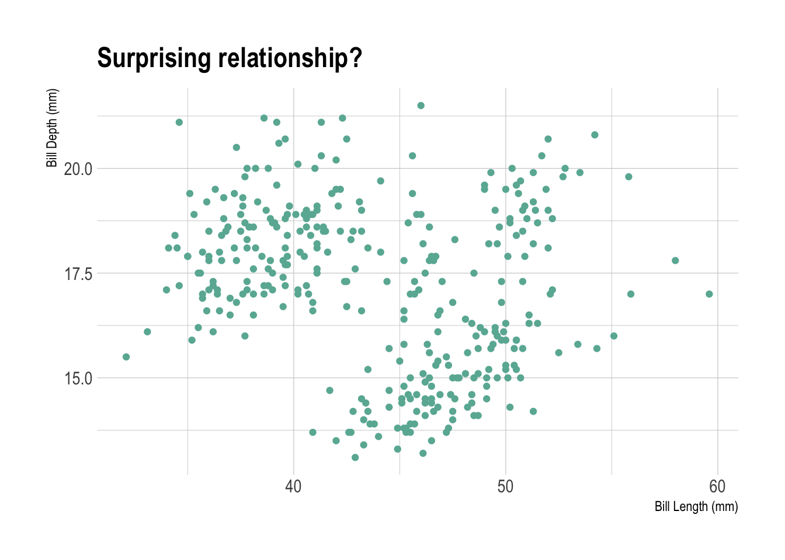
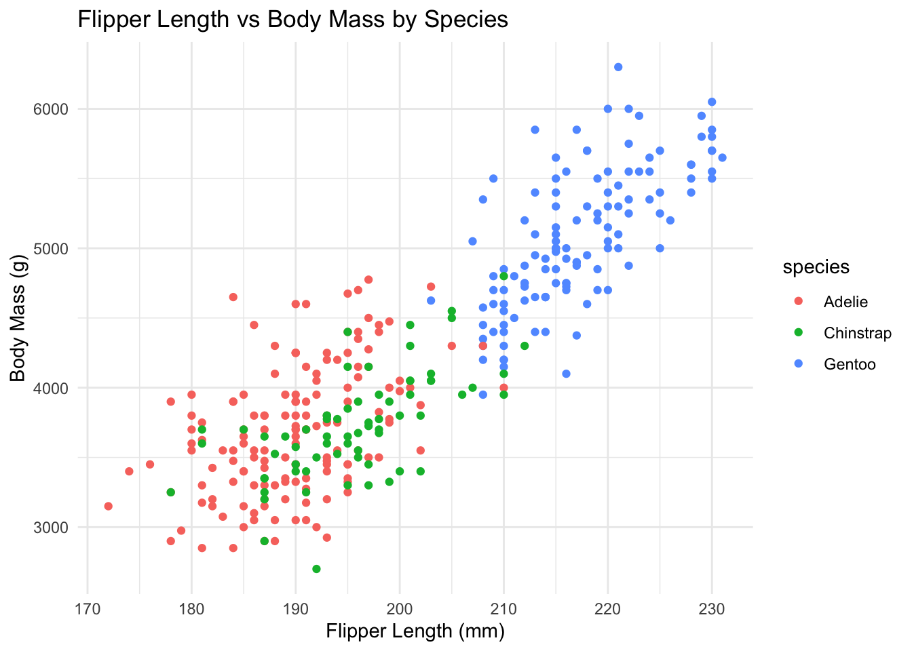
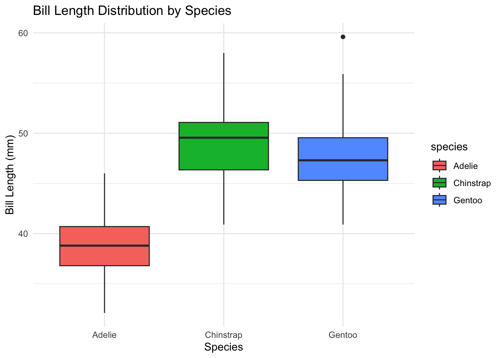
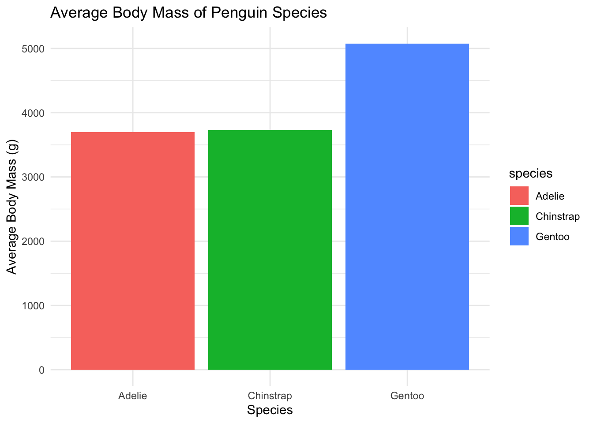

And simultaneously demonstrating the capabilities of Quarto.
This document is a short analysis of the Penguin Dataset. It explores the relationship between bill length and bill depth and show how important it is to consider group effects.
Author
Affiliation
Sandra Tanz
Curtin University
Published
October 14, 2024
Keywords
Quarto, Paradox, Data Analysis
A few considerations about this doc
This Quarto document serves as a practical illustration of the concepts covered in the productive workflow online course. It’s designed primarily for educational purposes, so the focus is on demonstrating Quarto techniques rather than on the rigor of its scientific content.
1 Introduction
This document offers a straightforward analysis of the well-known penguin dataset. It is designed to complement the Productive R Workflow online course.
# load the tidyverselibrary(tidyverse)library(hrbrthemes) # ipsum theme for ggplot2 chartslibrary(patchwork) # combine charts togetherlibrary(DT) # interactive tableslibrary(knitr) # static table with the kable() functionlibrary(plotly) # interactive graphslibrary(xml2)library(downlit)library(dplyr)library(rmarkdown)
2 Loading data
The dataset has already been loaded and cleaned in the previous step of this pipeline.
Let’s load the clean version, together with a few functions available in functions_v2.R.
Code
# Source functionssource(file ="functions_v2.r")# Read the clean datasetdata <-readRDS(file ="../input/clean_data.rds")
1
Why does it not need R/functions_v2.r for path to function? Note: As default, Quarto always reverts to the directory where the qmd file is located in (even if you setwd() to be different). Here: analysis.qmd file is located in ~/Desktop/productive-r-workflow_vscode/R
2
need to go up a folder
Note that bill_length_mm and bill_depth_mm have the following signification.
Bill measurement explanation
In case you’re wondering how the original dataset looks like, here is a searchable version of it, made using the DT package:
Now, let’s make some descriptive analysis including summary statistics and graphs.
What’s striking is the slightly negative relationship between bill length and bill depth. One could definitely expect the opposite.
Code
# Scatterplot: bill length vs bill depth using ggplotscatterplot <-ggplot(data, aes(x = bill_length_mm, y = bill_depth_mm)) +geom_point(color ="#69b3a2") +labs(x ="Bill Length (mm)",y ="Bill Depth (mm)",title =paste("Surprising relationship?") ) +theme_ipsum()# Turn plot interactive with ggplotlyggplotly(scatterplot, height =400, width =400)
Figure 1: Relationship between bill length and bill depth. All data points included.
Code
# Explanation: Chart in Full Screen# Sometimes a chart is just too small to be read in your quarto report. Or maybe you want to display several charts side by side, with the option to enlarge one of them.# To do so, first create a button using some HTML code.# Second, create a div with the modal content that is your chart.

It is also interesting to note that bill length and bill depth are quite different from one species to another. The average of a variable can be computed as follow:
For instance, the average bill length for the species Adelie is 38.81.
The relationship between bill length and bill depth changes when split by species.
Code
# Use the function in functions_v2.rp1 <-create_scatterplot(data, "Adelie", "#6689c6")p2 <-create_scatterplot(data, "Chinstrap", "#e85252")p3 <-create_scatterplot(data, "Gentoo", "#9a6fb0")p1 + p2 + p3
There is actually a positive correlation when split by species.
4 More plots using tabs
Code
# Explanation: in a quarto doc, the ::: operator adds a html div. Then, writing .panel-tabset .nav-pills adds 2 classes to the div. Quarto relies on a framework called bootstrap. Bootstrap knows thoses classes and transform their children in tabs automatically for us!
ggplot(data, aes(x = flipper_length_mm, y = body_mass_g, color = species)) +geom_point() +labs(title ="Flipper Length vs Body Mass by Species",x ="Flipper Length (mm)",y ="Body Mass (g)") +theme_minimal()
Warning: Removed 2 rows containing missing values or values outside the scale range
(`geom_point()`).

Code
ggplot(data, aes(x = species, y = bill_length_mm, fill = species)) +geom_boxplot() +labs(title ="Bill Length Distribution by Species",x ="Species",y ="Bill Length (mm)") +theme_minimal()
Warning: Removed 2 rows containing non-finite outside the scale range
(`stat_boxplot()`).

Code
ggplot(data, aes(x = species, y = body_mass_g, fill = species)) +geom_bar(stat ="summary", fun ="mean") +labs(title ="Average Body Mass of Penguin Species",x ="Species",y ="Average Body Mass (g)") +theme_minimal()
Warning: Removed 2 rows containing non-finite outside the scale range
(`stat_summary()`).

5 Conclusion
Internal link: Here is the link to the section 2 of the document!
---title: "Exploring the Simpson’s Paradox Within the Penguin Dataset"subtitle: "And simultaneously demonstrating the capabilities of Quarto." description: "This document is a short analysis of the Penguin Dataset. It explores the relationship between bill length and bill depth and show how important it is to consider group effects."author: name: "Sandra Tanz" affiliation: "Curtin University" email: sandra.tanz@curtin.edu.aukeywords: "Quarto, Paradox, Data Analysis"date: todaytitle-block-banner: "#f0f3f5"title-block-banner-color: "black"format: html: code-fold: true code-summary: "Code" code-tools: true # includes a Code menu on top that allows to show or hide all the code chunks in one shot. code-link: true # links functions to their websites when xml2 and downlit packages are installed. code-annotations: hover # To add info about the code hover over the little numbers on the right to reveal explanation about the code line. toc: true toc-location: left toc-title: " " number-sections: true #embed-resources: true # This embeds all the dependencies directly into the HTML file, eliminating the need for external files. It increases the file size significantly, so use it with caution.editor: sourcefig-cap-location: margincss: style.cssinclude-after-body: "footer.html"theme: dark: darkly---***::: {.callout-caution collapse="true"}## A few considerations about this docThis Quarto document serves as a practical illustration of the concepts covered in the productive workflow online course. It’s designed primarily for _educational purposes_, so the focus is on demonstrating Quarto techniques rather than on the rigor of its scientific content.:::***## Introduction {#section-1}This document offers a straightforward analysis of the well-known **penguin dataset**. It is designed to complement the [Productive R Workflow](https://www.productive-r-workflow.com/) online course.::: {.column-margin}You can read more about the **penguin dataset** [***here***](https://allisonhorst.github.io/palmerpenguins/).:::Let's load libraries^[Libraries need to be loaded every time you run a project.] before we start!```{r}#| warning: FALSE#| message: FALSE# load the tidyverselibrary(tidyverse)library(hrbrthemes) # ipsum theme for ggplot2 chartslibrary(patchwork) # combine charts togetherlibrary(DT) # interactive tableslibrary(knitr) # static table with the kable() functionlibrary(plotly) # interactive graphslibrary(xml2)library(downlit)library(dplyr)library(rmarkdown)```***## Loading data {#section-2}The dataset has already been loaded and cleaned in the previous step of this pipeline.Let’s load the clean version, together with a few functions available in `functions_v2.R`.```{r}#| warning: FALSE#| message: FALSE# Source functionssource(file ="functions_v2.r") # <1># Read the clean datasetdata <-readRDS(file ="../input/clean_data.rds") # <2>```1. Why does it not need R/functions_v2.r for path to function? Note: As default, Quarto always reverts to the directory where the qmd file is located in (even if you setwd() to be different). Here: analysis.qmd file is located in ~/Desktop/productive-r-workflow_vscode/R2. need to go up a folderNote that `bill_length_mm` and `bill_depth_mm` have the following signification.{width="300"}In case you're wondering how the original dataset looks like, here is a searchable version of it, made using the `DT` package:**Original Dataset**```{r}# Interactive tabledatatable(data, options =list(pageLength =5), filter ="top")```***## Bill Length and Bill Depth {#section-3}Now, let’s make some descriptive analysis including **summary statistics** and **graphs**.What's striking is the **slightly negative relationship** between `bill length` and `bill depth`. One could definitely expect the opposite.```{r}#| fig.aling: "center"#| fig.width: 5#| fig.height: 5#| warning: FALSE#| fig.cap: "**Figure 1:** Relationship between bill length and bill depth. All data points included."# Scatterplot: bill length vs bill depth using ggplotscatterplot <-ggplot(data, aes(x = bill_length_mm, y = bill_depth_mm)) +geom_point(color ="#69b3a2") +labs(x ="Bill Length (mm)",y ="Bill Depth (mm)",title =paste("Surprising relationship?") ) +theme_ipsum()# Turn plot interactive with ggplotlyggplotly(scatterplot, height =400, width =400)``````{r}# Explanation: Chart in Full Screen# Sometimes a chart is just too small to be read in your quarto report. Or maybe you want to display several charts side by side, with the option to enlarge one of them.# To do so, first create a button using some HTML code.# Second, create a div with the modal content that is your chart.```<button type="button" class="btn btn-primary" data-bs-toggle="modal" data-bs-target="#exampleModal">See in Full Screen</button><div class="modal fade" id="exampleModal" tabindex="-1"><div class="modal-dialog modal-dialog-centered p-8" style="max-width: 90%"><div class="modal-content">```{r, echo=FALSE, warning=FALSE, out.width="100%"}scatterplot```</div></div></div><br>It is also interesting to note that `bill length` and `bill depth` are quite different from one species to another. The average of a variable can be computed as follow:$${\displaystyle Avg={\frac {1}{n}}\sum _{i=1}^{n}a_{i}={\frac {a_{1}+a_{2}+\cdots +a_{n}}{n}}}$$`bill length` and `bill depth` averages are summarized in the 2 tables below.```{r}#| layout-ncol: 2bill_length_per_species <- data %>%group_by(species) %>%summarise(average_bill_length =mean(bill_length_mm, na.rm =TRUE))# static table bill_length_per_specieskable(bill_length_per_species)bill_depth_per_species <- data %>%group_by(species) %>%summarise(average_bill_depth =mean(bill_depth_mm, na.rm =TRUE))# static table bill_depth_per_specieskable(bill_depth_per_species)bill_length_adelie <- data %>%group_by(species) %>%summarise(average_bill_length =mean(bill_length_mm, na.rm =TRUE)) %>%filter(species =="Adelie") %>%pull(average_bill_length) %>%round(2)```For instance, the average bill length for the species `Adelie` is `r bill_length_adelie`.The relationship between `bill length` and `bill depth` changes when split by species.```{r}#| warning: FALSE#| fig.height: 3#| fig.width: 9#| fig.cap: "There is actually a positive correlation when split by species."# Use the function in functions_v2.rp1 <-create_scatterplot(data, "Adelie", "#6689c6")p2 <-create_scatterplot(data, "Chinstrap", "#e85252")p3 <-create_scatterplot(data, "Gentoo", "#9a6fb0")p1 + p2 + p3```***## More plots using tabs {#section-4}```{r}# Explanation: in a quarto doc, the ::: operator adds a html div. Then, writing .panel-tabset .nav-pills adds 2 classes to the div. Quarto relies on a framework called bootstrap. Bootstrap knows thoses classes and transform their children in tabs automatically for us!```::: {.panel-tabset .nav-pills}## Scatterplot: Flipper Length vs Body Mass ```{r}ggplot(data, aes(x = flipper_length_mm, y = body_mass_g, color = species)) +geom_point() +labs(title ="Flipper Length vs Body Mass by Species",x ="Flipper Length (mm)",y ="Body Mass (g)") +theme_minimal()```## Boxplot: Bill Length```{r}ggplot(data, aes(x = species, y = bill_length_mm, fill = species)) +geom_boxplot() +labs(title ="Bill Length Distribution by Species",x ="Species",y ="Bill Length (mm)") +theme_minimal()```## Barplot: Body Mass```{r}ggplot(data, aes(x = species, y = body_mass_g, fill = species)) +geom_bar(stat ="summary", fun ="mean") +labs(title ="Average Body Mass of Penguin Species",x ="Species",y ="Average Body Mass (g)") +theme_minimal()```:::## Conclusion {#section-5}Internal link: Here is the link to the [section 2](#section-2) of the document!***<br><button class="accordion-button" type="button" data-bs-toggle="collapse" data-bs-target="#collapseOne" >Session Information</button><div id="collapseOne" class="accordion-collapse collapse"><div>```{r}sessionInfo()```</div></div>